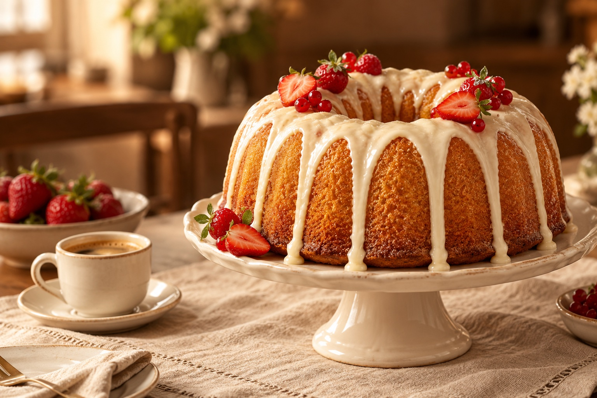
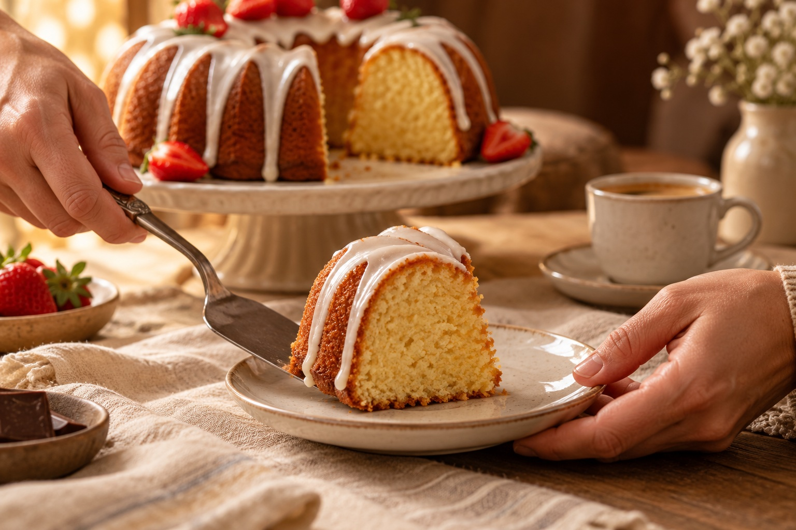

INTENSO & IRRESISTÍVEL
Chocolate
Chocolate por dentro. Uma generosa camada de carinho por fora.
O café fica mais gostoso.
A conversa dura um pouco mais.
E um dia comum ganha um sabor especial.

UM CONVITE PARA DESACELERAR O melhor ingrediente é o momento.Dos clássicos que abraçam
aos sabores que surpreendem.
Qual combina com o seu momento?
Chocolate por dentro. Uma generosa camada de carinho por fora.
Aquele clássico que combina com café passado e uma boa conversa.
Um toque cítrico, um aroma convidativo e vontade de repetir.
O aconchego da canela encontra a cremosidade do doce de leite.
Sugestões para abrir o apetite. Consulte sabores, coberturas, tamanhos e disponibilidade com a loja. Imagens ilustrativas.

A VIDA ACONTECE AO REDOR DA MESA.Às vezes, é só uma pausa no meio da tarde. Outras, é um encontro esperado ou um jeito de dizer “lembrei de você”. Sempre cabe um pouco de doçura.
Separe as xícaras, escolha um sabor e faça da pausa a melhor parte do dia.
Conte o que você está imaginando.
A gente começa a conversa por aí.
Explore as sugestões e escolha o que fez seus olhos brilharem.
Um café, um presente ou uma comemoração? Conte a data e a sua ideia.
A equipe confirma os sabores disponíveis, valores e os detalhes da sua encomenda.
Venha conhecer a Santo Bolo.
Tem sempre um bom motivo para uma pausa gostosa.